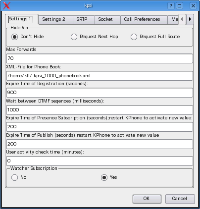
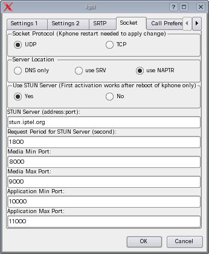
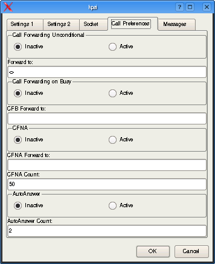
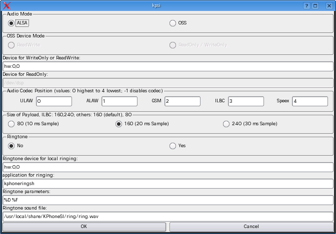
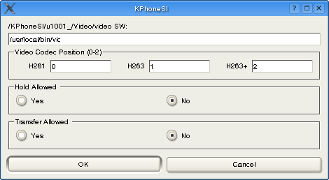

Ask your provider/sysadmin for the parameters you have to enter here !
Full Name: A freely chosen name or URL of the user; some providers require to set the User-ID here
User Part of SIP URL: SIP-User ID
Host Part of SIP URL: the address or domain name of the used Proxy Server.
Outbound Proxy: If set, all SIP-packages are sent to it.
Authentication Username: If authentication is mandatory, enter the authentication user name here.
Clear Password? Set this to clear your stored password.
Auto Register should be set, if registration at UA startup is wanted.
At last the changes are solicited with "OK". Please restart KPhoneSI, to activate your changes
First Part

In many cases the defaults will work, you possible have to ask your provider for the correct choice.
Users behind a NAT
and/or firewalls , should may possibly set
the option "Use STUN Server" and enter a STUN. For details,
please ask your provider!

Implemented are :
Call Forwarding Unconditional, your call will be forwarded to an other URI (number) as soon it reaches your UA. The “Forward to” field must be supplied with the forward to URI ( <sip:user@proxy>)
Call Forwarding on no Answer, the forward to URI must be supplied( <sip:user@proxy>). The CFnA-Count is a counter based on the ring tone sequence. The call is forwarded forwarded to the forward to URI (number) after <counter> ringing intervals . CFnA is activated if it's “Active” Flag is set.
Auto Answer The call will be accepted automatically after <counter> ringing intervals. AA is activated if the “Active” Flag is set.
Important: The CFnA-settings and the Auto-Answer-Flag will not be stored! They must be supplied after every restart of the phone, if it is planned to use them.

The user may select the sound system of his choice, OSS and ALSA are implemented
The codec preference is fixed by setting (unique)values between 0 and 5 in the position fields, the value -1 deselects a codec completely
For Audio calls Call Hold and Call Transfer are always possible.

|
Codec |
Bandwidth |
Quality |
|---|---|---|
|
G.711u |
64 Kbit |
ISDN |
|
GSM |
13Kbit |
European mobile phones |
|
iLBC |
15Kbit |
n.a. |
|
Speex |
n.a. |
n.a. |
| Ringtone: |
you may chose between no tone,
for different tones or an audio file of type wav |
| Ringtone Device: | Enter the audio device, you plan to use for ringing, if you have only one soundcard, always enter your audio device |
| Application for ringing: | We have two applications coming with kphoneSI:
If you dislike both, enter your preferred audio player, be aware kphoneSI calls it only once. If you plan to adapt kphoneringsh yourself, never use a audio player with graphical user interface! |
| Ringtone Parameters: |
%F is the file name, %D the device name. For kphonering set %F kphoneringsh needs both %D %F |
| Ringtone Sound File |
the file you plan to play |
| Ringtone: |
chose the 2nd button (ext. Device) |
| Ringtone Device: | 0:0 |
| Application for ringing: | mplayer |
| Ringtone Parameters: |
%D %F |
| Ringtone Sound File |
enter the file you plan to play |
The path to the application is set here.
The codec preference is fixed by setting (unique)values between 0 and 2 in the position fields, the value -1 deselects a codec completely
Call Hold and Call Transfer are enabled by setting the appropriate flag.

Provisioning for the generalized sessions:
the path to the application
the applications command line, the values are described below
the Icon
the VectorID
The button list:
Remote Startable If set, the “Remote Button“ of the call widget is enabled.
Hold Allowed
Transfer Allowed
Sound Card Used disallowed further calls, which have set the flag, too.
SDP Transport , used to select the SDP transport method for this application.
|
%A |
IP Address the Peers |
|
|
%P |
Media-port-number of the peer |
|
|
%O |
Own media-port-number |
|
|
%I |
Direction Flag |
o for a Outgoing Call, i for a Incoming Call |
|
%T |
SDP Transport |
|
|
%D |
The Call-ID |
|
|
%L |
Own IP-address |
|
|
%R |
referTo address |
|
|
%M |
own URI |
|
|
%C |
callee's URI |
|
See PhoneBook